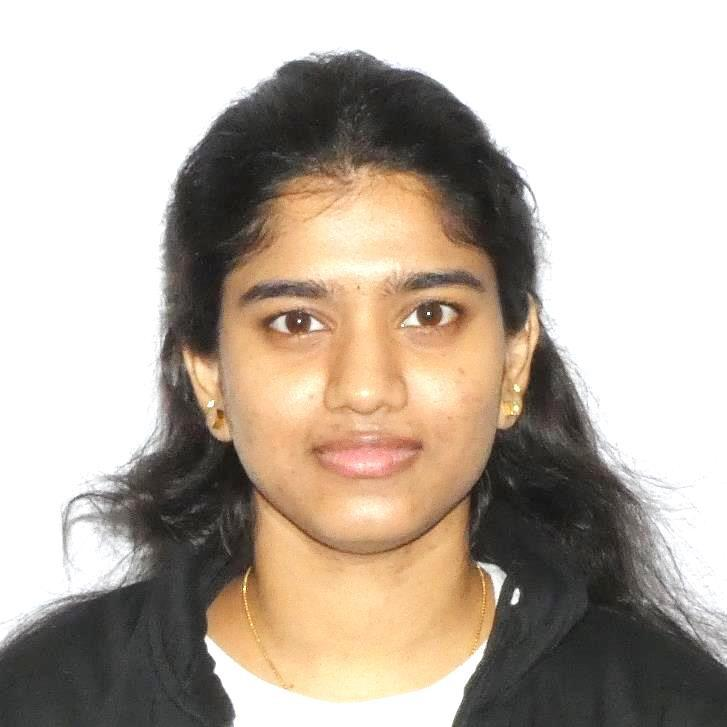

I am a graduate student at the University of North Texas with interests in full-stack development, data analytics, visualization, and building practical software solutions. I enjoy creating web applications, dashboards, and research-driven technical projects that solve real-world problems.
I am currently pursuing a Master’s degree in Computer and Information Science at the University of North Texas. My background includes web development, data visualization, analytics, and academic research. I have worked on projects involving Django-based applications, dashboard design, task management tools, clustering analysis, and intelligent systems. I am actively seeking opportunities in software development, data analytics, business intelligence, and technology-driven roles where I can apply both technical and problem-solving skills.
Developed a full-stack Django web application that enables users to book indoor sports facilities, check real-time slot availability, reserve equipment, manage payments, and receive booking confirmations. The admin panel supports inventory updates, equipment management, and maintenance tracking.
Built a task management application for organizing daily work with task priority, due dates, and status tracking. The project focuses on productivity, simple UI design, and structured task handling for students and professionals.
Created a budgeting web application that helps users calculate monthly income and expenses, monitor spending, and improve financial planning through a clean and user-friendly design.
Performed data preparation, visualization, correlation analysis, and K-means clustering on in-motion vehicle CAN bus datasets to study injected speed and RPM messages. Built plots and compared patterns across multiple scenarios.
Designed interactive dashboards using Power BI and Tableau to analyze structured datasets with scatter plots, line charts, and combined visual reports to uncover trends and meaningful insights.
Worked on a research-oriented project exploring communication frameworks for smart cities, focusing on IoT integration, AI governance, cybersecurity, non-terrestrial networks, and future intelligent infrastructure.
University of North Texas
Master’s in Computer and Information Science
Expected Graduation: 2026
Email: boyapatineeshani@gmail.com
LinkedIn: linkedin.com/in/navya-eeshani-boyapati-6b98aa322
GitHub: github.com/Eeshani15